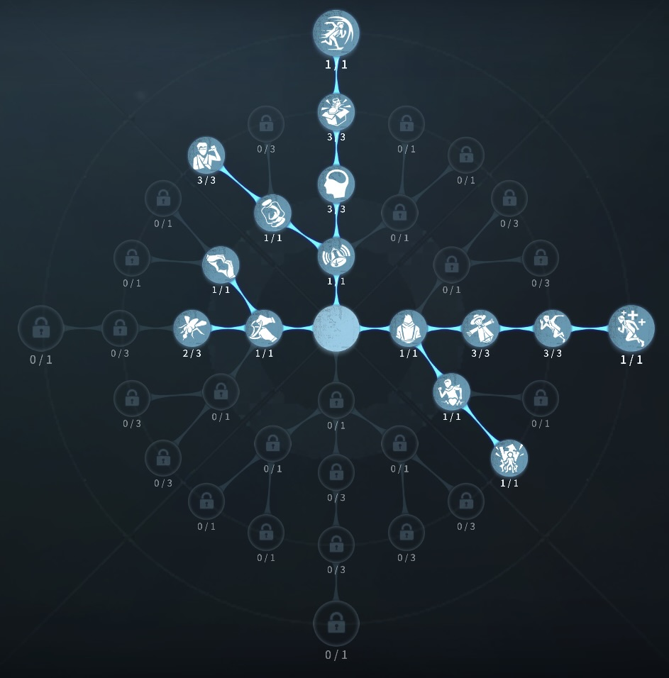
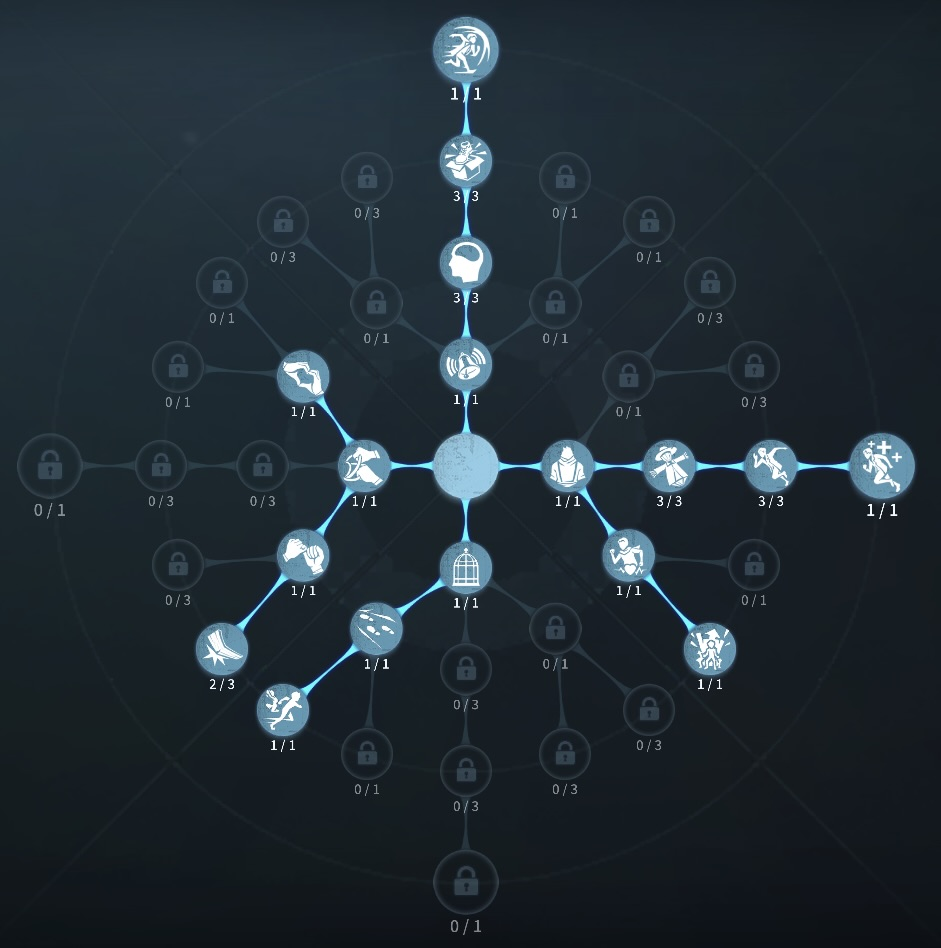

カウボーイの評価
縄で風船椅子救助をなんなくこなす
外在特質と特徴
特質1:投げ縄
・カウボーイは縄を持っており、15m以内にサバイバーが入ればサバイバーを引き寄せ担ぐただし付近32m以内のハンターに位置がバレる。ハンターが入ればハンターの頭上を飛び越え反対の位置に着地する。なお飛び越え中は無敵判定。板や暗号機にあたるとその位置までカウボーイが引き寄せられる。いずれの場合も成功した場合加速効果を得る。・ロケットチェアに吊るされているサバイバーに当たると1ダメージ負傷状態で担いで救助することができる。風船状態のサバイバーに当たると、ダウン状態のままカウボーイに担がれる。この時風船抵抗進捗が10％増加し次の風船状態時に引き継がれる。ダウン状態で担がれたサバイバーのダウン進捗は増加せず、自己治療することはできない。
サバイバーに命中、もしくはいずれにも命中しなかった：10％
風船状態、もしくは椅子に縛られたサバイバーに命中：35％
板、暗号機、ハンターに命中：20％
特質2:馬上英雄
・ハンターを板で気絶させたときハンターの回復速度が20％低下する特質3:自由奔放
・解読速度10％低下。・女サバイバーと一緒に解読したとき解読速度10％上昇。
・男サバイバーと一緒に解読したとき解読速度30％低下。
特質4:庇護欲
・女性キャラを背負っている時にハンターの攻撃を受けると、カウボーイは2ダメージの負傷をするが、背負っていた仲間は負傷しない。・男性キャラ、または機械人形を背負っている時にハンターの攻撃を受けると、2人がそれぞれ1ダメージずつ負傷する。ダウン中の仲間を背負っている場合は性別問わずカウボーイが1ダメージ受ける。
特徴
カウボーイは理解度がとても必要になる。縄ポジションは必ず把握しておく
風船救助が見せ所なので、駆け引きが得意な方はおすすめ！
基本的な立ち回り方
1. 追われた時
暗号機や板に縄を使って確実に伸ばそう！
どんどん縄を使ってファーストチェイスを延ばして板当ての駆け引きをしても良いかも
人格、かいりき3に振っていれば空軍の銃とほぼ同等のスタン時間となる。
2. 追われない時
解読をする
男サバイバーと一緒に解読するのだけは避ける
風船粘着をとことん狙っていこう
おすすめの内在人格
フライホイール治療型人格
この内在人格は、癒合で治療を強化して、尻に火で板間を強くした人格

フライホイール板当て型人格
この内在人格は、怪力に振ることで、元々強化されている板当てがさらに強化、また共感に振ることで粘着を早める人格


みんなのコメント